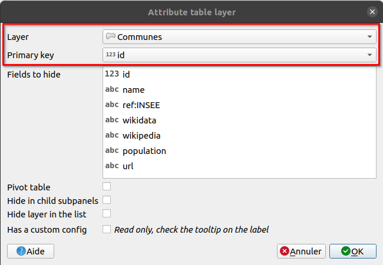
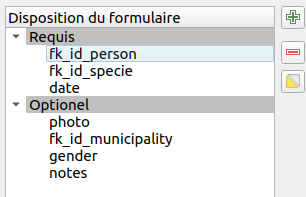

Atelier Lizmap#
Pré-requis#
Cet atelier concerne les utilisateurs de l'atelier Lizmap sur 1/2 journée.
- Client FTP (WinSCP sous Windows, Filezilla sous macOS/Linux)
qgis/theme_formation: le dossier pour l'atelierqgis/theme_formation/media/metadata.pdf: un fichier PDF
- QGIS 3.16
- Extension Lizmap dans QGIS Bureautique
- Projet QGIS dans l'email
- Le projet QGIS contient déjà les couches PostgreSQL
Liens#
- Démo https://demo.lizmap.com
- Hébergement Lizmap clé en main https://www.lizmap.com
- Présentations PDF/HTML avec les vidéos https://docs.3liz.org/talks/#lizmap
- Mailing-list Osgeo Lizmap üá¨üáß (et un peu de üá´üá∑)
- Comptes Twitter :
- https://twitter.com/LizmapForQgis pour Lizmap uniquement
- https://twitter.com/3LIZ_news à propos de 3Liz
- https://twitter.com/3lizRelease à chaque fois que l'on fait une nouvelle version sur un projet GitHub dans un de nos projets
- Code source
- Lizmap Web Client https://github.com/3liz/lizmap-web-client/
- Lizmap côte QGIS (bureautique et serveur) : https://github.com/3liz/lizmap-plugin/
- 3Liz https://github.com/3liz/ pour extensions QGIS Serveur, modules Lizmap
- Groupes Utilisateurs nationaux
Documentation#
- https://docs.lizmap.com/
- Voir l'architecture de Lizmap et les manuels
Première publication rapide#
- Ouvrir le projet
- Mettre une emprise correcte (en montrant toutes les îles)
- Dans les propriétés du projet :
- Menu Projet / Propriétés
- Onglet Relations, ajouter toutes les relations automatiquement avec le bouton découvrir
- Onglet QGIS Serveur,
- Capacités des services
- mettre un titre et un résumé
- Capacité WMS
- utiliser l'emprise actuelle du canevas dans l'étendue annoncée.
- Capacité WFS
- publier toutes les couches
- Capacités des services
- Ouvrir l'extension Lizmap
- Seulement une fois, ajouter un serveur Lizmap avec l'URL de la page d'accueil
- Exemple
https://workshop.lizmap.com/qgis_fr_matin/. - On n'a pas besoin du nom d'utilisateur et du mot de passe
- Exemple
- Quitter l'extension Lizmap (le fichier Lizmap est créé dès que l'on ferme la fenêtre)
- Transférer le projet (
.qgset.cfg) dans le dossierqgis/theme_formationsur le FTP
Tip
Bonus si vous avez une petite image PNG nom_du_projet.qgs.png pour remplacer l'image du projet par défaut.
Prendre en main l'interface web Lizmap#
- La carte
- Les dossiers
- L'interface d'administration
Légende#
- Faire des groupes dans la légende
SaisieDonnéeshidden, avechminuscule
- Ranger les couches dans les groupes en regardant la capture ci-dessous
- Renommer les couches avec un nom plus présentable
- Exception pour l'orthophoto IGN, dans le groupe
hiddenqui doit avoir le nomign-photo
- Exception pour l'orthophoto IGN, dans le groupe

Success
Lizmap utilise QGIS Serveur en arrière-plan, la légende est donc identique que sur QGIS Bureautique.
Certaines configurations dans le projet QGIS ou dans l'extension Lizmap ont un impact dans l'interface web.
Tip
À partir de maintenant, envoyez souvent les données sur le serveur pour voir les modifications.
- Faire une symbologie rapide sur les points.
- Ajouter des étiquettes avec le nom de la commune et ajouter un seuil de visibilité en fonction de l'échelle (1:300 000)
- Champs
namepour la source des étiquettes - Onglet Rendu, seuil de visibilité minimum 1:300 000
- Champs
- Manipulation dans l'extension Lizmap, dans l'onglet Couches :
- Pour les communes, mettre la couche visible par défaut
- Ajouter des liens sur deux couches :
- PDF pour les observateurs :
media/metadata.pdf, un lien vers un PDF, stocké dans le dossiermedia(vous pouvez le voir dans le logiciel FTP) - HTML pour les communes :
https://fr.wikipedia.org/wiki/Liste_des_communes_de_la_Polyn%C3%A9sie_fran%C3%A7aise
- PDF pour les observateurs :
- Dans l'onglet fond, ajouter la couche IGN France Orthophoto. Désormais, on n'a plus besoin de clé.

Table attributaire#
- Depuis l'extension, activer la table attributaire pour la couche des communes.
- Dans l'onglet table attributaire, ajouter une nouvelle couche

Tip
On peut améliorer le visuel de notre table attributaire en ajoutant des alias sur nos champs :
- Propriétés de la couche vecteur ➡ Formulaire d'attribut ➡ Alias pour chaque champ
Interactions avec les popups "auto" et "qgis"#
- Dans l'extension Lizmap, onglet couches, activer les popups sur la couche
communeen modeautoet vérifier le résultat en cliquant sur une commune - Retourner dans l'extension Lizmap et changer la popup un mode QGIS sur la même couche et cliquer sur le bouton "Générer un tableau HTML"
- Dans les propriétés de la couche vecteur
commune, onglet Affichage, puis Infobulle HTML, observer le code HTML. - Astuce : QGIS ➡ Vue ➡ Afficher les infobulles pour afficher directement dans QGIS bureautique. Vous devez sélectionner aussi l'outil infobulle dans la barre d'outils.
Ces popups QGIS sont très puissantes grâce à l'utilisation des expressions QGIS.
Avec des expressions#
On peut aussi utiliser des expressions QGIS :
- Mettre en majuscule le nom de la commune
- Afficher la population en rouge si moins de 20 000 habitants
Afficher les solutions
- Première solution pour les majuscules :
1 2 3 4
<ul> <li>[% upper("name") %]</li> <li>[% "population" %]</li> </ul> - Deuxième solution pour la population en rouge :
1 2 3 4
<ul> <li>[% upper("name") %]</li> <li style="color:[% if( "population" > 20000, 'black', 'red') %]">[% "population" %]</li> </ul>
On peut avoir le même style graphique que la popup auto avec la popup qgis en lisant la
documentation.
Édition d'une couche#
On souhaite désormais rendre éditable une couche depuis l'interface web afin de pouvoir ajouter des observations.
- Dans QGIS, faire un essai du formulaire par défaut sur la couche des observations. Vous avez besoin de passer en mode édition d'abord avec le petit crayon jaune.
- Améliorer le formulaire dans QGIS :
- Propriétés de la couche ➡ Formulaire d'attributs ➡ Conception par glisser/déposer
- Supprimer le champ
id - Faire 2 groupes :
RequisetOptionel

- Configurer les champs :
fk_id_person:- Alias
Observateur - Référence de la relation avec
name
- Alias
fk_id_specie:- Alias
Espèce - Valeur relationnelle
speciesidetes_nom_commun
- Alias
date:- Alias
Date - Date/heure par défaut
- Alias
photo:- Alias
Photo - Pièce jointe
- Alias
gender:- Alias
Genre - Liste de valeurs :
Mâle,Femelle
- Alias

- Une fois que le formulaire est OK dans QGIS (√† peu pr√®s üôÇ), ajouter l'√©dition dans l'extension Lizmap pour cette couche.
Success
On peut utiliser des expressions QGIS dans les formulaires (visibilité, conditions, valeurs par défaut etc). Lire la documentation.
Impression PDF#
Choix de la zone d'impression par l'utilisateur#
- Dans le projet QGIS, il y a déjà une mise en page
Landscape A4.- Activer l'impression dans l'extension Lizmap, onglet Options
- Personnaliser la zone de titre dans le PDF :
- Clic sur le titre
Example workshop - Identifiant de l'objet ➡
title
- Clic sur le titre
Success
Dans ce cas-là, c'est l'utilisateur qui choisit ce qu'il souhaite imprimer en PDF.
Depuis une popup, lié à une entité#
- Dupliquer la mise en page actuelle et en faire un atlas :
- Menu Projet, Gestionnaire de mise en page, Dupliquer, nom
Fiche commune PDF - Éditer cette nouvelle mise en page
- Activer l'atlas sur la couche des communes
- Changer le titre pour afficher le nom de la commune
- Configurer la carte pour suivre l'atlas.
- Menu Projet, Gestionnaire de mise en page, Dupliquer, nom
Success
Alors que dans ce cas-là, le PDF est lié a une entité précise.
Dataviz#
Diagramme en bar#
- Ajouter un diagramme en bar concernant la population sur la couche des communes (et non pas un histogramme).
- Title
- Description
- Couche : commune
- Champ X : Nom
- Pas d'agrégation
- Trace :
- champ population
- couleur bleue

Camembert#
- Faire un camembert sur la répartition des observateurs :
- Ajouter un champ virtuel
countdans observateurs de type entiers :
- Ajouter un champ virtuel
1 2 3 4 5 | |
- Puis ajouter le camembert :
- Title
- Description
- Couche : Observateurs
- Champ X : Nom
- Agrégation sum
- Trace : count

Filtrage sur les graphiques#
Pour le moment, ce sont des graphiques montrant une couche entière. Il est possible de faire des graphiques pour une entité précise, par exemple, la répartition des espèces pour un observateur.

- Ajouter un champ virtuel
label_species(text) dans la coucheobservationspour avoir le nom de l'espèce :
1 | |
-
Ajouter un camembert sur la couche des observateurs :
- Camembert
- Titre : Espèce de l'observateur
- Couche : Observations
- Champ X :
label_species - Agrégation
Count - Traces :
id - Case à cocher Afficher le graphique filtré dans la popup du parent
- Case à cocher Afficher seulement dans les popups des enfants

Résultat final

Merci de votre attention üòé